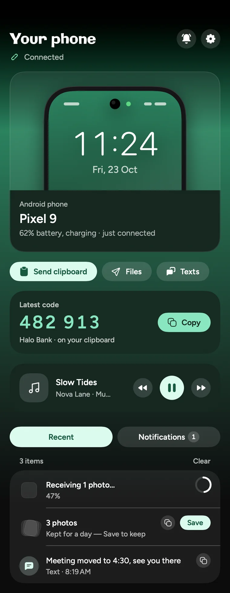
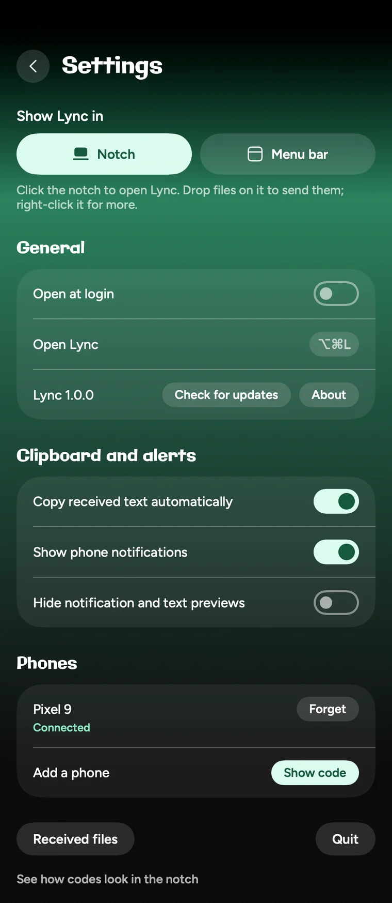
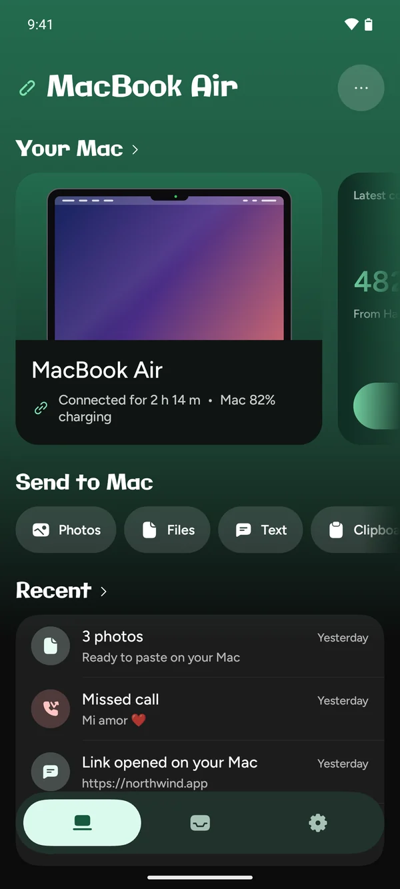
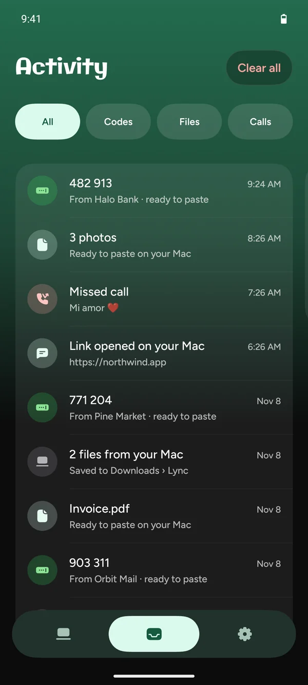
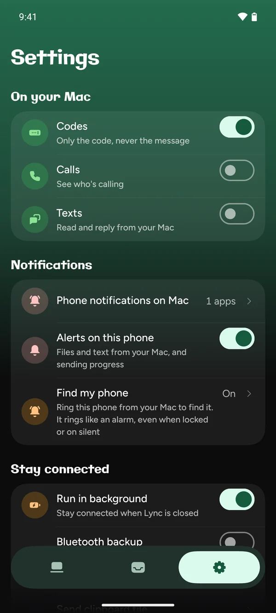

Codes, already copied
One-time codes from texts or any app go straight to your clipboard. Press ⌘V and you're in. The code itself never shows on screen.
••• •••Copied
Halo Bank
Lync brings your Android phone to your Mac, in the notch or the menu bar. Codes, calls, texts and files, right where you're looking. No account, no cloud.

One-time codes from texts or any app go straight to your clipboard. Press ⌘V and you're in. The code itself never shows on screen.
See who's calling without looking for your phone. Decline from your Mac, or answer and pick up on the phone.
Texts and the notifications you pick show up on your Mac. Reply right there; it sends from your phone.
Share photos, files and links from your phone, or drop them on Lync to send them to your phone.
Music, podcasts or videos on your phone: see what's playing, then play, pause or skip from your Mac.
Already have an app in your notch? Keep it. Move Lync to the menu bar with one click, and it works the same.

Lync picks up the colors of your phone's wallpaper, on the phone and on the Mac, so it feels like yours.
Not on the same Wi‑Fi? Codes, calls and notifications still arrive over Bluetooth. Files wait for Wi‑Fi.

See it's connected, send photos, files or your clipboard, and find what came across recently.

Codes, files, calls and links in one list, newest first. Filter to just what you're looking for.

Codes only, never the message. Turn calls, texts or notifications on only if you want them.
No sign-up, no email, no password. You pair by scanning a code.
Everything goes straight from your phone to your Mac, over your Wi‑Fi or Bluetooth.
No analytics and no ads. The developer never receives any of your data.
Install Lync from Google Play. It asks for each permission only when you turn on the feature that needs it.
Get it on Google PlayDownload the DMG and drag Lync into Applications. The first time, macOS can't check it, because it isn't sold through Apple: open System Settings › Privacy & Security and click Open Anyway.
Download for MacYour Mac shows a code. Scan it with the phone and you're done. After that they find each other by themselves, and the Mac app updates itself.
No. Lync is free on both, with no ads and no paid tier. It's open source.
Any phone with Android 10 or later, and any Mac with macOS 14 or later. On a Mac without a notch, Lync lives in the menu bar.
For everything, yes. When they aren't, codes, calls and notifications still arrive over Bluetooth while the phone is near the Mac. Files wait until you're back on the same Wi‑Fi.
Keep it. In Lync's settings on the Mac, choose Menu bar and Lync moves there. Everything works the same.
Lync is free and isn't sold through Apple, so macOS asks you to confirm the first time. Open System Settings › Privacy & Security and click Open Anyway. You only do this once; updates install without it.
Yes. Codes, calls, texts and notifications each have their own switch on the phone, and for notifications you pick the apps. For codes, only the code and who sent it are shared, never the message.
Lync stays connected quietly in the background and only sends something when there's something to send. Bluetooth is used only when Wi‑Fi can't reach your Mac, and stops as soon as it can.
The phone app updates from Google Play. The Mac app checks once a day and installs new versions in one click. You never download it again.